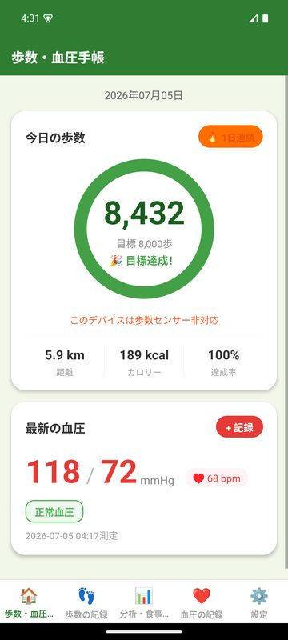
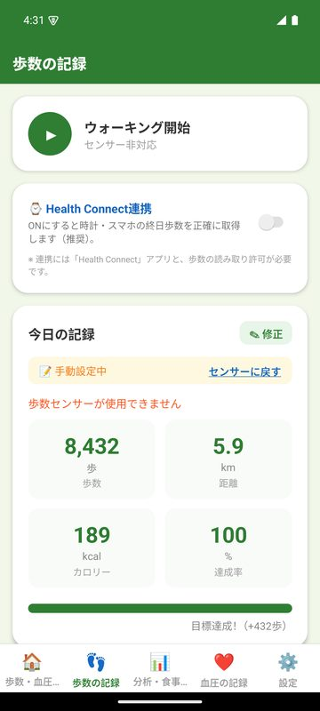
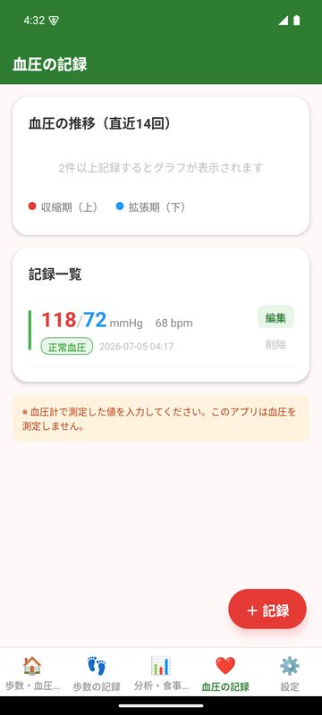
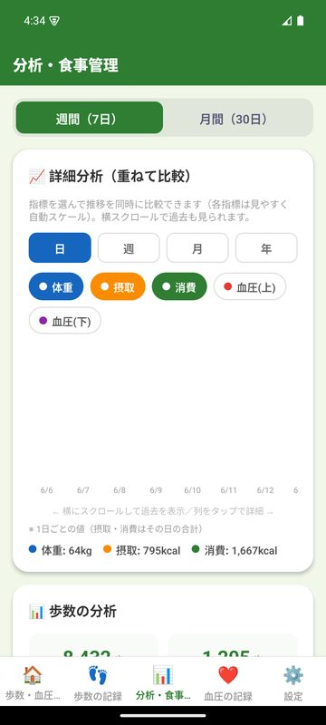
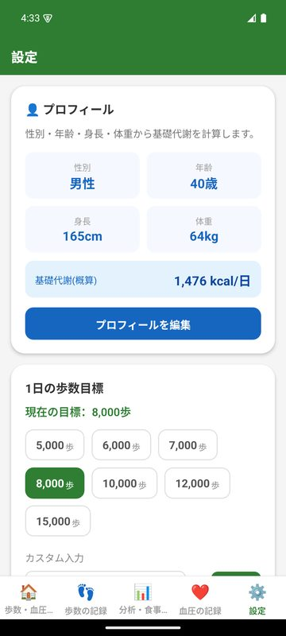

Overview
このアプリについて
歩数・血圧・体重・食事を一元管理できる、非医療用の健康記録手帳アプリです。Health Connect 連携による歩数の取得と、血圧・食事・体重の手動記録を組み合わせ、週間・月間のグラフ分析やカロリー収支の可視化、PDFレポート出力までを1つのアプリで行えます。
このアプリはインターネット通信を行わない構成で、広告配信SDKやアクセス解析も使用していません。記録はすべて端末内に保存されます。
本アプリは医療機器ではありません。血圧を測定する機能はなく、数値は手動入力のみです。表示される数値は入力値から算出した概算の参考値であり、診断・治療を目的としたものではありません。健康上の問題や治療方針については、必ず医師・専門家にご相談ください。
Features
主な機能
歩数記録（Health Connect 連携・任意）
血圧・脈拍・体重の手動記録
食事記録（食品117種＋検索）とカロリー収支の可視化
週間・月間の分析グラフ、30日間の達成カレンダー
週間・月間レポートのPDF出力、リマインダー通知
全データのローカルJSONバックアップ
Screenshots
画面





Privacy
データの取り扱い
実装で確認できた内容のみを記載しています。
- Google Playでの表示名
- 血圧手帳｜歩数・健康記録
- アプリID
com.ajuworks.stepbpdiary- データ保存場所
- 歩数・血圧・体重・食事記録・プロフィール・設定値は端末内のデータベースにのみ保存します。
- 外部送信
- インターネット権限を持たない構成のため、記録が外部へ送信されることはありません。
- 広告・解析
- 広告配信SDK・アクセス解析・トラッキングは一切使用していません。
- Health Connect
- ユーザーが連携をONにした場合に限り、歩数（Steps）のみを読み取ります。書き込みは行いません。
- 主要な権限
- 身体活動（歩数計測）/ 通知 / Health Connect の歩数読み取り
Support
お問い合わせ
不具合のご報告・ご要望はメールにて受け付けています。